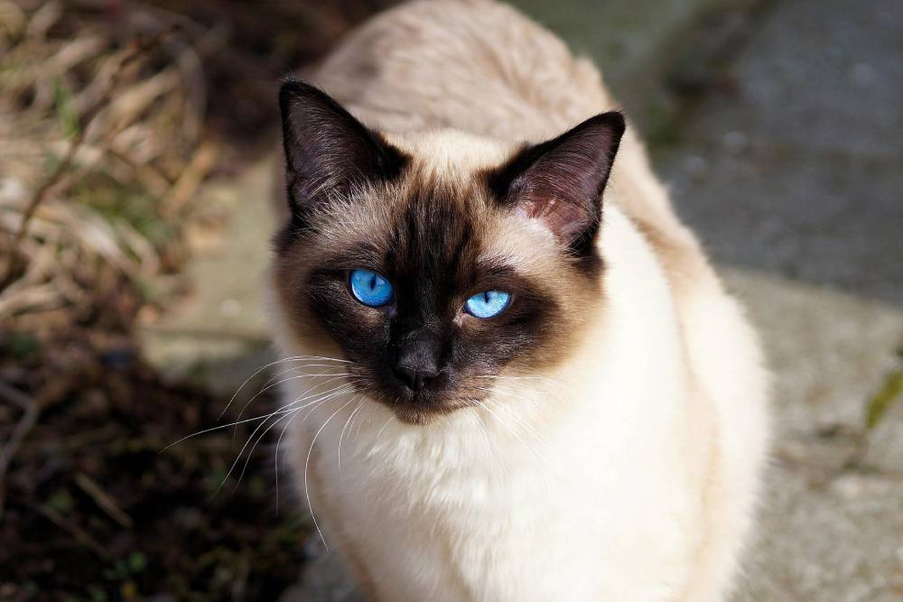

QUAIS SÃO AS PRINCIPAIS RAÇAS DE GATO?
1- PERSA E HIMALAIA
.jpeg)
O gato Persa é uma raça braquicefálica, nome dado a caracteristica da conformação craniana, devido ao seu focinho ser mais curto
ou achatado. O que pode resultar na dificuldade da respiração , muitas vezes refletindo em seu comportamento mais tranquilo e quente
Já a raça de gato Himalaia é mais nova, nasceu em 1950, quando cruzaram um pet que tivesse corpo do Persa e a coloração do Siamês
(olhos azuis e cores nas extremidades, denominado Persa Colorpoint).
- ORIGEM: irã
- EXPECTATIVA DE VIDA: 15 A 20 ANOS
2- SIAMÊS

A aparência de um gato Siamês é o que mais chama atenção:olhos bem azuis e pelos claros com extremidades mais escuras(rosto,orelhas,patas e rabo)
Com postura elegante,esta raça era comum em companhias para reis na Tailândia
- ORIGEM:Tailândia
- EXPECTATIVA DE VIDA:15 a 20 anos
3- MAINE COON
.jpeg)
Os gatos de raça Maine Coon são enormes, chegando a pesar até 13kg e ter um porte semelhante ao de um poodle médio.
São brincalhões, ativos, companheiros e amigáveis. Por ser bem diferente e única, esta raça de gato gigante necessita de
cuidados e atenção especiais. Por isso, existe a ração especifica para a raça de gato Maine Coon.
- ORIGEM: Estados Unidos
- EXPECTATIVA DE VIDA: 9 a 15 anos
4- ANGORÁ
.jpeg)
Fofo,elegante e independente,o gato Angorá pertence a uma raça de gatos domesticos que veio da Turquia
De pelos longos que necessitam de escovação frequente e olhos claros e marcantes,o gato Angorá adora brincar
e é ótimo para fazer companhia a crianças.Sua pelagem pode ter diversas cores,do branco ao preto,passando pelo
vermelho e por misturas.
- ORIGEM:Turquia
- EXPECTATIVA DE VIDA:12 a 18 anos
5- SPHYNX
.jpeg)
É um gato exótico e diferente, a raça Sphynx é a mais rara dos felinos. Também conhecido como Pelado Canadense, o
gato desta raça possui o visual totalmente sem pelos!. São extremamentes dóceis e apegados aos donos, adoram carinho,
companhia e brinquedos.
- ORIGEM: Toronto
- EXPECTATIVA DE VIDA: 15 a 20 anos